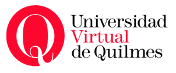

|  |
Universidad de Quilmes |
Materias del núcleo avanzado obligatorio:
Las materias del núcleo básico obligatorio completan la formación obligatoria del estudiante. Para todas las materias incluidas en la siguiente tabla, el régimen de cursado es cuatrimestral, y la modalidad es presencial.
| Materia | Horas semanales | Carga horaria | Créditos |
| Redes de Computadoras | 6 | 108 | 12 |
| Sistemas Operativos | 6 | 108 | 12 |
| Programación Concurrente | 4 | 72 | 8 |
| Matemática II | 4 | 72 | 8 |
| Volver a la página principal de la UNQ |